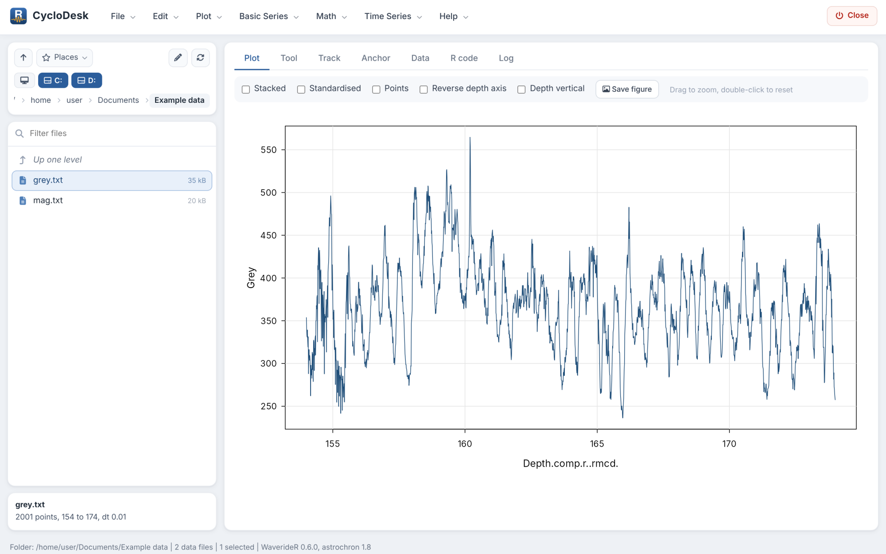
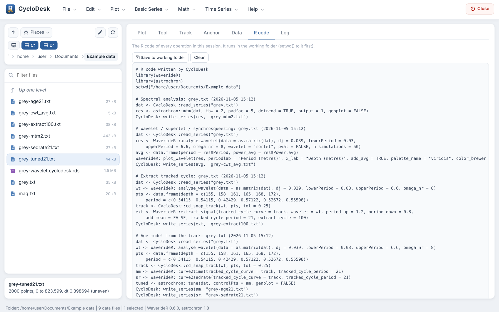

Getting started: a complete analysis in CycloDesk
Source:vignettes/articles/getting-started.Rmd
getting-started.RmdThis walkthrough analyses the IODP Site 926 grey-scale record (154 to 174 m composite depth, Zeeden et al. 2013) that comes with WaverideR. It takes about fifteen minutes and goes from the raw record to a floating age model, a tuning check and an anchored age model. Every step writes its result as a text file into your working folder and adds its R code to the R code tab.
1. Start CycloDesk
With the Windows launcher, double-click the CycloDesk icon on the desktop. From R:
CycloDesk::run_app() # starts in the last working folder
CycloDesk::run_app("C:/data/my_project") # or in a given folderThe interface opens in your web browser but runs on your own computer.
2. Choose a working folder and load the example data
The panel on the left is the working folder. Click a folder to open it, use the drive buttons and Places to jump elsewhere, or click a part of the path. Make an empty folder for this tutorial with File > New folder… and open it.
Then choose Basic Series > Example data, pick
IODP 926 grey scale (Zeeden et al. 2013) and press
Run. The file grey.txt appears in the
folder. Click it to plot it; drag over the plot to zoom and double-click
to go back.

Your own data work the same way: text, csv (also with semicolons and decimal commas), Excel and LAS files, with depth or time in the first column. For tables with more columns, choose the column below the file list.
3. Spectrum
Choose Time Series > Spectral analysis. The defaults compute a multitaper spectrum (MTM) with an AR(1) red-noise background and confidence levels. Press Run.

The peaks above the 95 % level are listed below the figure. The
strongest are at about 0.52 m and 0.39 m: the precession band. WaverideR
documents the 0.4 to 0.55 m band of this record as the ~22 kyr
precession cycle, which means a sedimentation rate of roughly 2 cm/kyr.
The spectrum is written as grey-mtm2.txt.
4. Wavelet scalogram
Choose Time Series > Wavelet / superlet / synchrosqueezing and press Run. The scalogram shows how the period of each cycle changes with depth, which a single spectrum cannot. Try other colour palettes, the colour scale, or Whiten to give weak and strong cycles the same contrast.

The result is saved as grey-wavelet.cyclodesk.rds;
double-click it later to re-plot it without recomputing.
5. Track the precession cycle
Choose Time Series > Track a cycle by hand on the scalogram. Section 1 already selects the scalogram you just computed; press Show scalogram.
In section 2, click points along the bright band at about 0.5 m, from the top to the bottom of the record. With snapped to the nearest power peak every click jumps to the band. Click a point to select it, drag it to move it, and press Delete or Backspace to remove the selected points. Then complete the curve:
- Snap the whole curve to the nearest peaks follows the band at every depth, guided by your points;
- Follow the ridge (HMM) follows it with a hidden Markov model;
- Smooth the curve (LOWESS) removes jumps between neighbouring peaks.
In section 3 (Helper lines) type 41, 100: the
periods that obliquity and short eccentricity would have with this track
are drawn on the scalogram. If the track is right, these lines follow
bands of their own.
6. Floating age model and the extracted cycle
In section 4, set Duration of the tracked cycle to
21 and Cycle to extract to 100.
Then:
-
Extract cycle writes the 100-kyr cycle, scaled from
the track, as
grey-extract100.txtand shows it below the scalogram; -
Age model + tuned series writes the floating age
model (
grey-age21.txt), the sedimentation rate (grey-sedrate21.txt) and the tuned record (grey-tuned21.txt), and shows the age model and the tuned record with the extracted cycle on top.

With Show below the scalogram you can hide these panels again.
7. Tuning check
If the age model is right, the amplitude of precession should be
modulated by eccentricity. In section 5, set Modulated cycle to
21 and Modulating cycle to 100, and
press Run the check. CycloDesk extracts the 21-kyr
cycle with the track, takes its Hilbert envelope, extracts the 100-kyr
cycle from that envelope, and compares it with the 100-kyr cycle
extracted from the record itself, both on the floating time scale.

The correlation r is shown above the lower panel. A strong negative r is also a good result: the proxy then responds inversely to eccentricity. The band factors set the width of each extracted band. With Update after every change of the track on, the check reruns whenever you move a point, so you can improve the track and watch r.
8. Anchor to an astronomical solution
Press Anchor to a solution… in section 4. The Anchor tab opens with the extracted 100-kyr cycle as the record and the floating age model as the starting model. Choose La2004 eccentricity as the target and set Age of the top of the record to an approximate age from your biostratigraphy or magnetostratigraphy.
Click a peak in the record (top), then the matching peak in the target (middle). One tie point shifts the floating model; two or more give a piecewise-linear age model that keeps the floating sedimentation rates beyond the outer ties. The bottom panel shows the tuned record on the target with its correlation. Age model + tuned series writes the anchored age model, the tuned record and the tie points.

Anchoring needs independent age control: a good correlation with the wrong eccentricity cycle looks just as convincing as with the right one.
9. Repeat it in R
The R code tab holds the code of every step: reading the file, the WaverideR or astrochron call and writing the result. Save it with Save to working folder to repeat or adapt the analysis in a script.

Feedback
CycloDesk is in alpha. If something did not work as described here, or a method you need is missing, please open an issue or start a discussion.
References
Zeeden, C., Hilgen, F., Westerhold, T., Lourens, L., Röhl, U., Bickert, T. (2013). Revised Miocene splice, astronomical tuning and calcareous plankton biochronology of ODP Site 926 between 5 and 14.4 Ma. Palaeogeography, Palaeoclimatology, Palaeoecology 369, 430-451. https://doi.org/10.1016/j.palaeo.2012.11.009